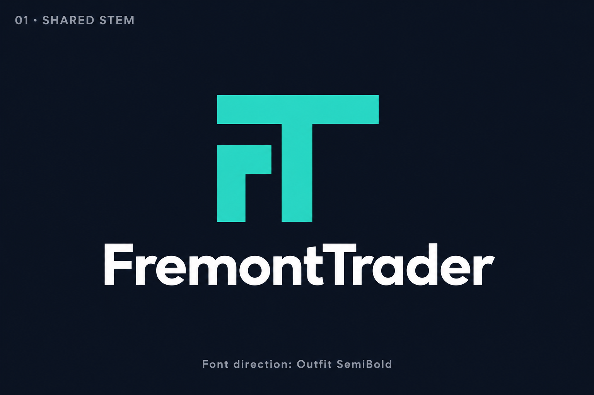
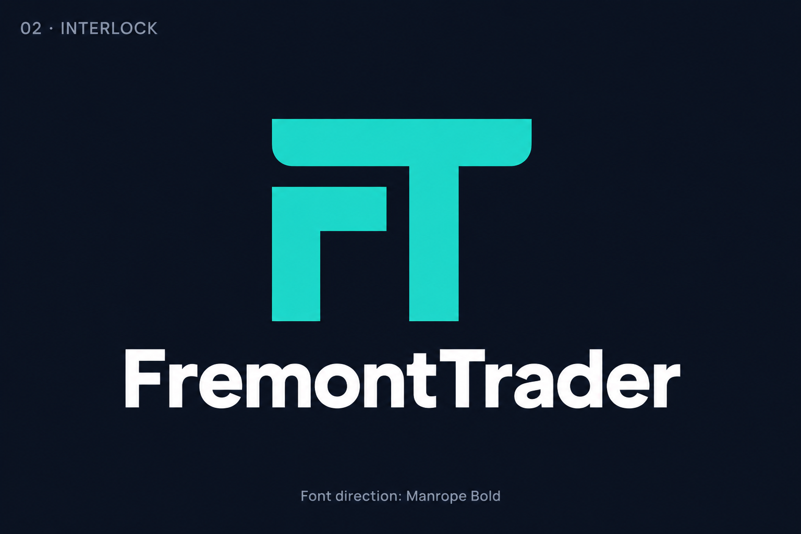
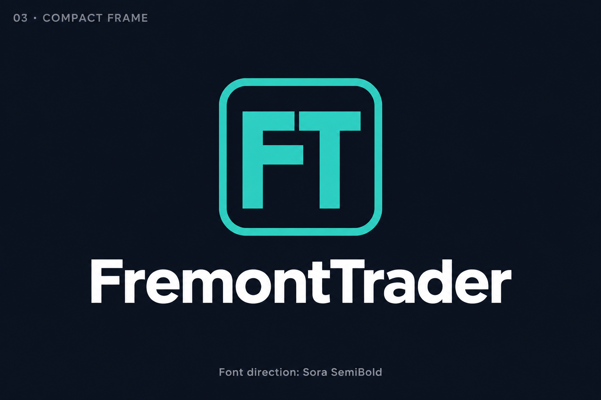
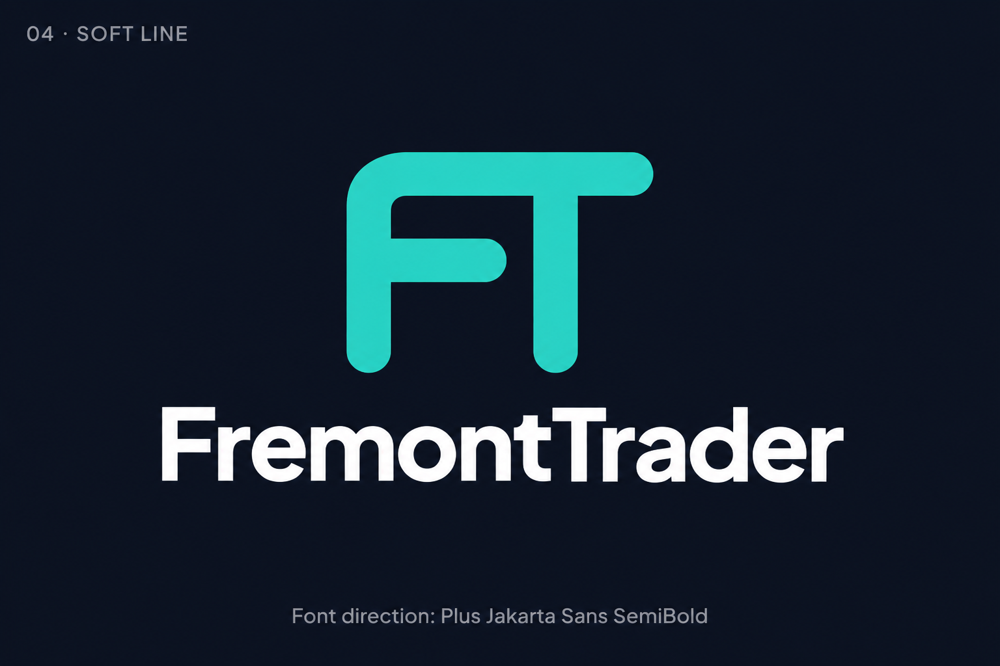
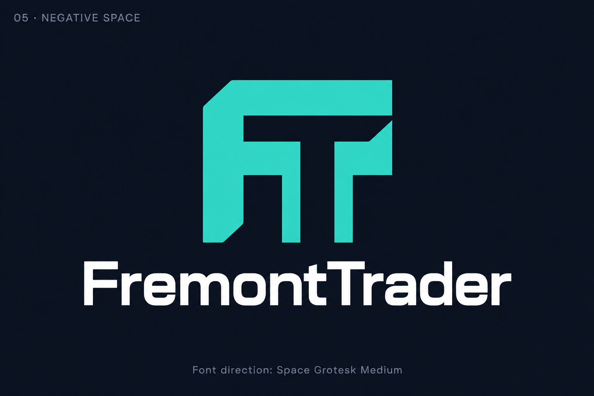
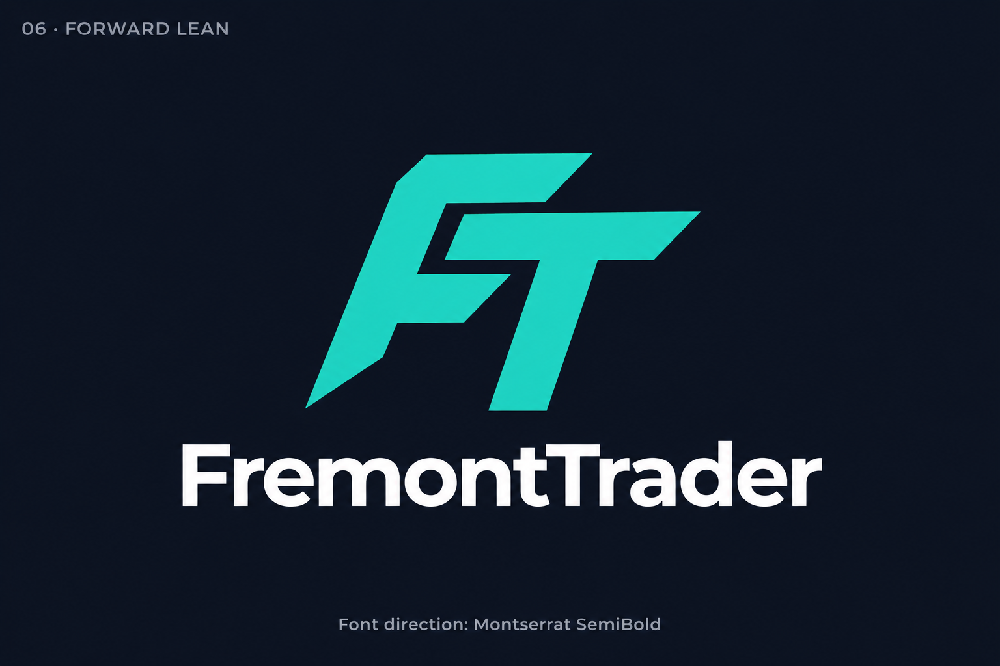
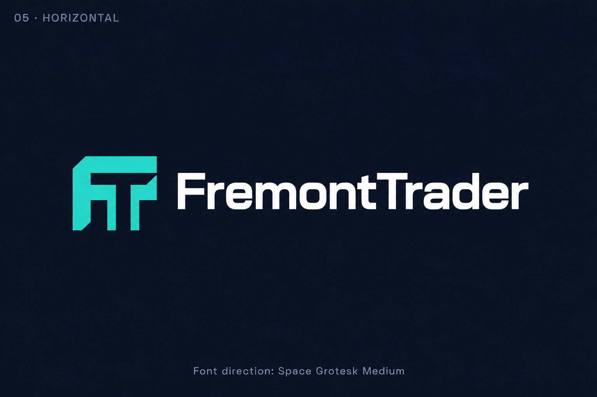

FremontTrader
Logo previews
Seven original previews, preserved at 1536 × 1024 pixels. Select an image to open its full-resolution PNG.
Font labels describe the proposed typography direction; the generated previews may not reproduce those fonts exactly.


01 Shared stem
Font direction: Outfit SemiBold


02 Interlock
Font direction: Manrope Bold


03 Compact frame
Font direction: Sora SemiBold


04 Soft line
Font direction: Plus Jakarta Sans SemiBold


05 Negative space
Font direction: Space Grotesk Medium


06 Forward lean
Font direction: Montserrat SemiBold


05 Horizontal Approved
Font direction: Space Grotesk Medium